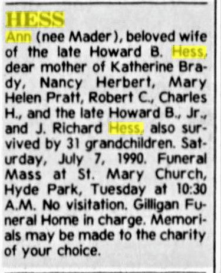

Anne Elizabeth (Mader) Hess
21 July 1903 – 7 July 1990
Quick Facts
Immediate Family
Parents
- Robert Joseph Mader (1861–1944)
- Frances Hoh Mader (1864–1943)
Spouses
- Howard Bernard Hess (1899–1953; married 1928)
Children
- John Richard Hess Sr. (1935–1986)
- Katherine Hess Brady (1929–2002)
- Howard B. Hess Jr. (1930–1967)
- Nancy Jane Hess Herbert (1932–2017)
- Robert Charles / Herbert Robert Charles Hess (1933–2018; name order varies)
- Mary Helen Hess Pratt (1937–2012)
- Charles H. Hess (1941–2002)
Siblings
- Marie / Maria Katharine Mader (1894–1984)
- Michael Franz Mader (1897–1972)
- Cyrus Johan Mader (born 10 Jun 1900; baptism transcription)
- Lawrence Joseph Mader (born 18 Sep 1906; baptism transcription)
Family Relationship Notes
Anne’s parents Robert Joseph Mader and Frances Hoh are linked on her Find a Grave memorial; St Francis of Assisi parish baptism transcriptions independently name Robert and Frances (Hoh) as parents of children born in 1894, 1897, 1900, 1903, and 1906. The baptism lists are derivative transcriptions, not original register images. The 1903 Anna Elisabeth entry aligns by birth year and parents with Anne Elizabeth, while the memorial spelling is Anne.
Anne’s sibling list includes two memorial-linked siblings (Marie and Michael) and two additional probable siblings (Cyrus and Lawrence) found in the parish baptism transcription. Frederic Leo Mader’s separate baptism entry names different parents and is excluded.
The Find a Grave wedding-party caption identifies Anne and Howard in a six-person family group. The household’s 1953 obituary lists seven children, with individual name forms varying among memorial pages and obituary transcript.
Birth day differs by source: the memorial says Anne was born 21 July 1903; the St Francis baptism transcription lists Anna Elisabeth, daughter of Robert and Frances (Hoh), born 22 July 1903. Same person is plausible from year and parents but not established by an original register image.
Birth day differs by source: the memorial says Anne was born 21 July 1903; the St Francis baptism transcription lists Anna Elisabeth, daughter of Robert and Frances (Hoh), born 22 July 1903. Same person is plausible from year and parents but not established by an original register image.
Birth day differs by source: the memorial says Anne was born 21 July 1903; the St Francis baptism transcription lists Anna Elisabeth, daughter of Robert and Frances (Hoh), born 22 July 1903. Same person is plausible from year and parents but not established by an original register image.
Birth day differs by source: the memorial says Anne was born 21 July 1903; the St Francis baptism transcription lists Anna Elisabeth, daughter of Robert and Frances (Hoh), born 22 July 1903. Same person is plausible from year and parents but not established by an original register image.
Birth day differs by source: the memorial says Anne was born 21 July 1903; the St Francis baptism transcription lists Anna Elisabeth, daughter of Robert and Frances (Hoh), born 22 July 1903. Same person is plausible from year and parents but not established by an original register image.
On Family Tree Sites
No family-tree site links are listed.
Person Archive
Life Timeline
21 July 1903 · Birth · age 0
Find a Grave reports her birth in Dayton, Campbell County, Kentucky. The original birth record has not been reviewed.
1928 · Marriage to Howard Bernard Hess · about age 24–25
Find a Grave reports the marriage year. The original marriage record and exact date have not been located.
1935 · Son John Richard born · about age 31–32
Find a Grave gives John’s birth year as 1935. A secondary transcription of his 1950 Social Security application names Ann E. Mader as his mother and Howard B. Hess as his father; the original application has not been examined.
7 July 1990 · Death · age 86
Find a Grave reports her death in Columbus, Franklin County, Ohio, and burial at Saint Joseph New Cemetery in Cincinnati.
Life Story
Anne Elizabeth Mader was born in Kentucky in 1903 and died in Ohio in 1990, according to her Find a Grave memorial. Her memorial identifies her parents as Robert Joseph Mader and Frances Hoh, and identifies Howard Bernard Hess as her spouse, with a 1928 marriage. It lists John Richard Hess among their children. A transcription of John’s 1950 Social Security application names Ann E. Mader as his mother and Howard B. Hess as his father; the original application has not been examined directly here.
Photo Gallery


Sources and Evidence
- Find a Grave memorial 129455588: dates, locations, spouse, parents and some children/siblings; derivative memorial.
- Anne memorial photo gallery: captioned Hess–Mader wedding group and obituary notice.
- Robert Joseph Mader memorial 26986793 and Frances Hoh Mader memorial 22796455: linked parents/spouse/children; derivative memorials.
- St Francis of Assisi, Dayton, Kentucky baptism transcriptions: 1893–1896, 1897–1901, 1902–1906; derivative church-register transcriptions, not original images.
- John Richard Hess memorial 86978469: parent link, secondary.
Research Notes and Open Questions
- Original birth/death certificates, marriage record, census schedules, and baptism register images have not been examined in this pass. Verify the parish transcription against the register before treating the listed sibling group as complete.
- Find a Grave lists Marie and Michael as siblings; parish transcriptions add Cyrus (1900) and Lawrence (1906). No birth/death details established for the latter two.
- A 1905 Frederic Leo Mader entry names Frederic and Maria (Hauser), so it does not support a child of Robert and Frances.
- The household’s child list has name and identity variants across memorials and newspaper notice; keep them source-attributed.
DNA
No DNA matches linked yet.
Family Notes
Research notes, parish extracts and citations are in Anne’s GitHub archive.